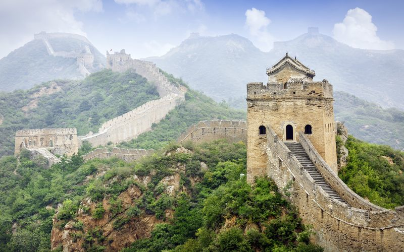

Kiinan kansantasavalta (yksinkertaistetut merkit: 中华人民共和国; perinteiset merkit: 中華人民共和國; pinyin: Zhōnghuá Rénmín Gònghéguó), josta yleensä käytetään nimitystä Kiina (yksinkertaistetut merkit: 中国, perinteiset merkit: 中國, pinyin: Zhōngguó), on maa Itä-Aasiassa. Kiina on noin 1,4 miljardilla asukkaallaan väkiluvultaan maailman suurin maa ja pinta-alaltaan kolmanneksi suurin Venäjän ja Kanadan jälkeen. Suurin osa Kiinan pinta-alasta on varsinaiseen Kiinaan kuulumattomia, harvaan asuttuja alueita (Sinkiang, Sisä-Mongolia, Qinghai, Tiibet ja Mantšuria), ja suurin osa maan väestöstä asuu Varsinaisen Kiinan alueella. Kiinan naapurimaita ovat Intia, Nepal, Bhutan, Myanmar, Laos, Vietnam, Venäjä, Korean demokraattinen kansantasavalta, Pakistan, Mongolia, Kirgisia, Tadžikistan, Afganistan ja Kazakstan.
Kiina on hallitusmuodoltaan kansantasavalta, jota hallitsee Kiinan kommunistinen puolue (KKP). Talousjärjestelmältään se ei enää kuitenkaan ole kommunistinen, vaan ”sosialistinen markkinatalous”, joka on eräänlainen yhdistelmä suunnitelmataloutta ja markkinataloutta. Ihmisoikeudet ovat Kiinassa yhä heikkoja. Lehdistön suoja on olematon, aktivisteja ja juristeja katoilee ja ainakin satojatuhansia uiguureja on kadonnut uudelleenkoulutusleireille, joilla uiguureja kidutetaan ja pidetään nälässä.
Nykyinen Kiinan kansantasavalta on vielä Taiwania hallitsevan Kiinan tasavallan seuraaja. Kansantasavalta syntyi, kun Mao Zedongin johtamat kommunistit voittivat Kiinan sisällissodan ja tasavaltalaiset joukot pakenivat Taiwanin saarelle. Kansantasavalta julistettiin perustetuksi 1949. 19 valtiota, esim. Vatikaani pitää edelleen Kiinan tasavaltaa maan ainoana laillisena hallituksena. Suurin osa maista on kuitenkin hyväksynyt kansantasavallan olemassaolon.
Kommunismin alkuaikoina Kiinassa oli suuria vainoja ja nälänhätiä, mutta vuodesta 1978 vähitellen tehdyn talouden liberalisoinnin seurauksena Kiina on onnistunut nousemaan ostovoimalla mitattuna maailman suurimmaksi taloudeksi. Kiina on ollut jo 35 vuoden ajan yksi maailman nopeimmin kasvavista talouksista. Länsimaissa Kiina on tullut tunnetuksi halvan työvoiman maana, jonka seurauksena on alettu puhua ns. Kiina-ilmiöstä. Tosin Kiinan palkkatason kohoamisen myötä Kiina-ilmiö on jakautunut koskemaan laajemmin Itä-Aasian maita.
Nykyään Kiina lasketaan poliittiseksi, taloudelliseksi ja sotilaalliseksi suurvallaksi. Kiinan kansanarmeijan miesvahvuus on maailman suurin yli 2,8 miljoonalla sotilaallaan. Lisäksi Kiina on ydinasevaltio.

Kiina lukuina
- Väkiluku : 1,386 miljardia (2017)
- Bkt : 12 610 mrd
- Pinta-ala : 9 596 961 km²
Kiinan suuret kaupungit
Shanghai
Tianjin
Wuhan
Chongqing
Faktoja Kiinasta

Kiinassa puhuttavat kielet
Mandariinikiina
Mongoli
Paikoittainen Korea
Tiibet